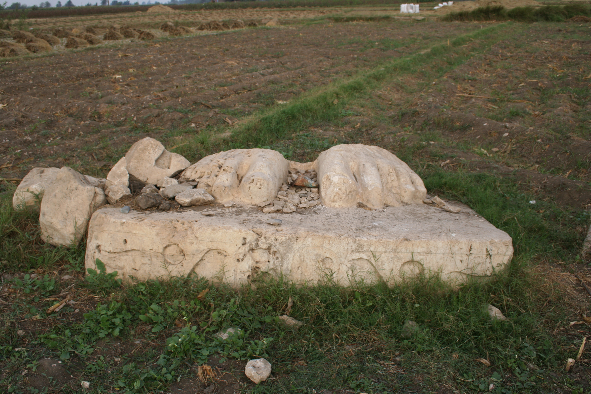

Pi-Ramesses (Qantir)

- Find Name
- Pi-Ramesses (Qantir)
- Historical Period
- New Kingdom, Ramesside period
- Artifact Date
- 13th century BC (capital of Ramesses II)
- Date Discovered
- 1920s (identified); ongoing excavations
- Discovery Location
- Qantir, Nile Delta, Egypt
- Current Location
- In situ, Nile Delta, Egypt
- Timeline Era
- Exodus and Wilderness
- Description
- The sprawling Ramesside capital at Qantir, identified by excavation as the city of Ramesses II, with palaces, stables, workshops, and a port on the Pelusiac Nile. It is the standard identification for the biblical Raamses, the store city Israel is said to have built. That identification is the scholarly consensus, not proof of the Exodus, and the entry claims no more.
- Biblical Significance
- If Israel built store cities for Pharaoh, this is what such a city looked like: vast, organised, and mighty. Pi-Ramesses gives the Exodus narrative a scale — and a reminder that the God who humbled such power did not need an army to do it.
- Evidence Class
- Contextual
- Interpretations
- Scholars broadly identify Qantir as Pi-Ramesses and Pi-Ramesses as biblical Raamses; the identification illuminates the Exodus setting but does not by itself prove the Exodus events.
- Scripture Illuminated
- Related Books
- Related Places
Awaiting Review Not yet checked against scholarly sources. Treat its claims as provisional until this entry is reviewed. About verification
Last reviewed: not yet reviewed